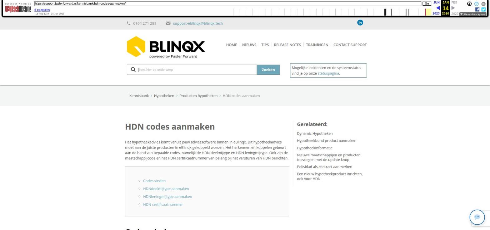

HDN codes aanmaken

Tekstinhoud
HDN codes aanmaken
Het hypotheekadvies komt vanuit jouw adviessoftware binnen in eBlinqx. Dit hypotheekadvies moet aan de juiste producten in eBlinqx gekoppeld worden. Het herkennen en koppelen gebeurt aan de hand van bepaalde codes, namelijk de HDN deelmijtype en HDN leningmijtype. Ook zijn de maatschappijcode en het HDN certificaatnummer van belang bij het versturen van HDN berichten.
Codes vinden
HDNdeelmijtype aanmaken
HDNleningmijtype aanmaken
HDN certificaatnummer
Codes vinden
De codes/gegevens zijn te vinden op de HDN website. Hiervoor ga je naar de HDN Schemabeheertool.
Je klikt op Offerteberichten.
Vervolgens zet je het filter 'Organisatie' op 'Basis'.
Je klikt op het laatst opgevoerde offertebericht. Dan klik op de knop 'Acties' en 'Documentatie downloaden'.
Er wordt een zip bestand gedownload. Deze kan je openen en hierin staat een PDF bestand met daarin de berichtstructuur. In deze berichtstructuur staan de HDNdeelmij en HDNleningmij codes. Ook staat de maatschappijcode in het bestand.
HDNdeelmijtype aanmaken
Deze codes moet je invullen onder het product. Deze kan je via Productbeheer – betreffende product invullen bij de velden HDNdeelmijtype en HDNleningmijtype. Deze codes staan vaak al in het dropdownmenu. Indien dit niet het geval is, dienen deze aangemaakt worden.
Hiervoor ga je naar 'Producten – productcodesonderhoud'. Kies het tweede tabblad 'Code manager'. Daarna selecteer je Hdncodedeelmijtype.
Klik je op het plusicoon. Vul hier de gegevens in en klik op opslaan.
Voorbeeld voor het invullen van de velden:
Code: AA001
Naam: ABN AMRO Annuïteiten hypotheek
Waarde: AA001 ABN AMRO Annuïteiten hypotheek
Voor elk type hypotheek (annuïtair, aflossingsvrij, enz) dient een codedeelmij aangemaakt te worden.
HDNleningmijtype aanmaken
Hetzelfde doe je voor de Hdncodeleningmijtype. Hiervoor ga je terug naar de codemanager en selecteer je Hdncodeleningmijtype. Dit is een soort van paraplu die overkoepelend is voor de HDNdeelmijcodes. Zo heb je bijvoorbeeld de HDNcodeleningmij AA010 ABN AMRO Budget Hypotheek. Onder deze leningmij vallen dan de AA001 ABN AMRO Annuïteiten Hypotheek, AA002 ABN AMRO lineaire hypotheek en AA003 ABN AMRO Aflossingsvrije hypotheek.
HDN certificaatnummer
Om vanuit eBlinqx aanvragen naar de geldverstrekker via HDN te versturen is het belangrijk dat het HDN certificaatnummer goed onder de organisatie ingesteld staat. Hier lees je er meer over.
Laatste update: 15 oktober 2025
Was deze informatie nuttig?
Ja Nee